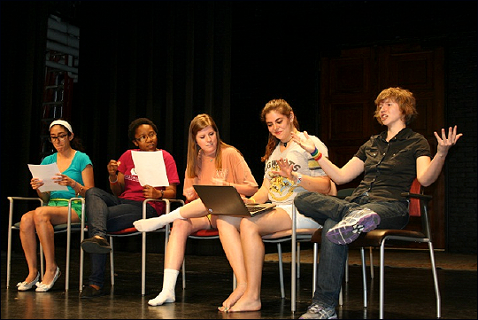
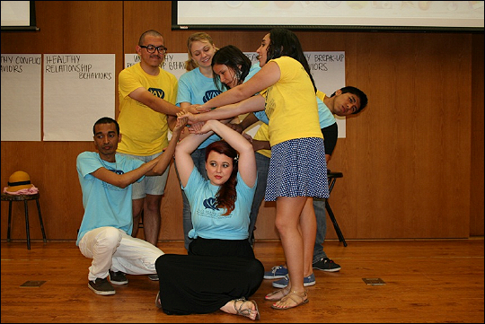
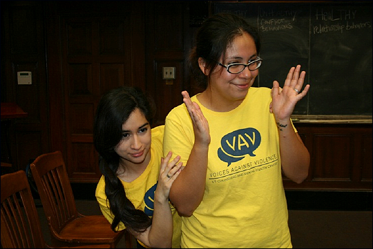

Enroll in Theatre for Dialogue, an Academic Course Sequence!
The VAV Theatre for Dialogue performances are presented by undergraduate and graduate UT Austin students who are trained through a year-long academic course sequence. Previous performance experience is NOT required to be in the class. Students learn about issues of interpersonal violence, rape culture, bystander intervention, and methods of applied and interactive theatre. Credit is available through the School of Social Work, Theatre and Dance, or Women's and Gender Studies.
Theatre for Dialogue requires a two semester commitment to complete the following courses:
Theatre for Dialogue: Exploring Interpersonal Violence (Fall semester class)
Students learn to use interactive and applied theatre to raise awareness and educate others about the issues of interpersonal violence including relationship violence, sexual violence and stalking. Requires application and consent of instructor. Max. 16 students.
Class meets Wednesdays from 2-5pmPerformance of Theatre for Dialogue (Spring semester class)
Students use facilitation skills and applied theatre methods to engage audience participants in dialogue. Class work includes facilitating/performing an original, devised program on campus for varied student populations. Requires consent of instructor. Max. 16 students.
Class meets Wednesdays from 2-5pm
More Information About the Class (PDF)




Together we can build a safer campus